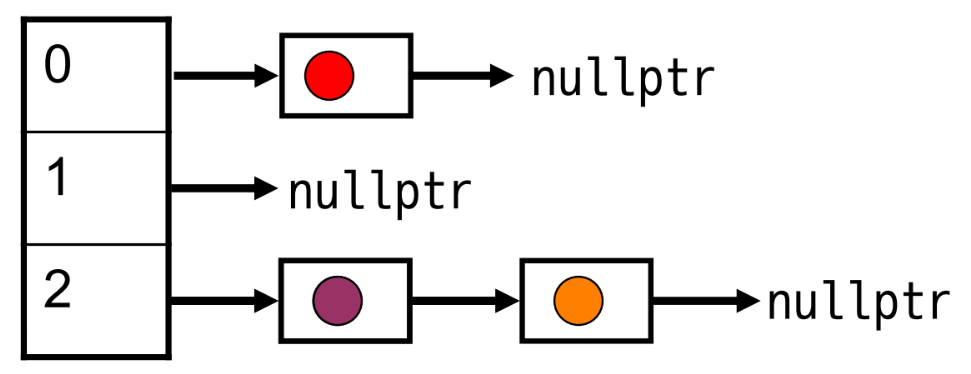

15 Stacks, Queues, Deque, Priority Queue
15.1 Stack
15.1.1 Stack - Interface
Stack is a data structure that supports insertion/removal in Last In, First Out (LIFO) order
Stack ADT Interface:
| Method | Description |
|---|---|
push(object) |
Add object to top of the stack |
pop() |
Remove top element |
object &top() |
Return a reference to top element |
size() |
Number of elements in stack |
empty() |
Checks if stack has no elements |
15.1.2 Stack Implementation
A stack can be implemented with an array/vector or linked list
15.1.3 Stack in STL
#include <stack>
std::stack<>The underlying containers are std::deque<> (by default), and std::list<>, std::vector<> (optional).
15.2 Queue
15.2.1 Queue - Interface
Queue is a data structure that supports insertion/removal in First In, First Out (FIFO) order
15.2.2 Queue Implementation
15.2.3 Queue in STL
#include <queue>
std::queue<>The underlying containers are std::deque<> (by default), and std::list<> (optional).
15.3 Deque
15.3.1 Deque - Interface
Deque is an abbreviation of Double-Ended Queue
#include <deque>
std::deque<>Main methods:
push_front()pop_front()front()push_back()pop_back()back()size()empty()- Random Access:
[]or.at()
STL incudes constant time operator[]()
15.3.2 Deque - Implementation
Circular Buffer
Doubly-linked list
15.4 Priority Queue
Each datum in the priority queue is paired with a priority value (usually numbers, should be comparable). Supports insertion, inspection of data, and removal of datum with highest priority.
For elements of the same priority, they are served according to their order in the queue (following FIFO order).

15.4.1 ADT - Interface
| Method | Description |
|---|---|
push(object) |
Add object to the priority queue |
pop() |
Remove highest priority element |
const object &top() |
Return a reference to highest priority element |
size() |
Number of elements in priority queue |
empty() |
Checks if priority queue has no elements |
15.4.2 Priority Queue Implementations
Priority queues can be implemented with many data structures. Heap is a common implementation.
| Insert | Remove | |
|---|---|---|
| Unordered sequence container | Constant | Linear |
| Sorted sequence container | Linear | Constant |
| Heap | Logarithmic | Logarithmic |
| Array of linked lists (for priorities of small integers) | Constant | Constant |
15.4.3 C++ Priority Queue
std::priority_queue<>
By default, uses std::less<> to determine priority. A default priority queue is a “max-PQ”, where the largest element has highest priority. To implement a “min-PQ”, use std::greater<>. Custom comparator (function object) needed if the elements cannot be compared with std less/greater.
Max PQ (std::less<>):
std::priority_queue<T> myPQ;
PQ with custom comparator type, COMP:
std::priority_queue<T, vector<T>, COMP> myPQ;
Key methods:
push()top()empty()pop()
Example Usage (Source):
priority_queue<int> pq;
int arr[6] = { 10, 2, 4, 8, 6, 9 };
for (int i = 0; i < 6; i++) {
pq.push(arr[i]);
}
while (!pq.empty()) {
cout << pq.top() << ' ';
pq.pop();
}
// Creating a min-heap (rather than a default max-heap)
// vector<int> is the internal container used
priority_queue <int, vector<int>, greater<int>> gq;Manual priority queue implementation with standard library functions:
#include <algorithm>
std::make_heap();
std::push_heap();
std::pop_heap();16 Generating Permutations
We can generate permutations by “juggling with stacks and queues”
Essentially, given \(N\) elements, we want to generate all \(N\) element permutations.
Main ingredients:
- One recursive function
- One stack
- One queue
Technique: move elements between the two containers
// Helper function for printing
template <typename T>
ostream &operator<<(ostream &out, const vector<T> &v) {
// display contents of a vector on a single line
for (auto &el : v) {
out << el << ' ';
}
return out;
}
// Implementation
template <typename T>
void genPerms(vector<T> &perm, deque<T> &unused) {
if (unused.empty()) {
// Base case: we have reached a permutation when unused is empty
// i.e. a full permutation has been formed
cout << perm << '\n';
return;
}
for (size_t k = 0; k != unused.size(); ++k) {
perm.push_back(unused.front()); // Pick the first element from unused
unused.pop_front(); // Remove this element from unused
genPerms(perm, unused); // Recursively generate permutation
unused.push_back(perm.back()); // Restore this element to unused
perm.pop_back(); // Remove it from the permutation
}
}
// Example Usage
int main() {
size_t n = 16;
vector<size_t> perm;
deque<size_t> unused(n);
iota(unused.begin(), unused.end(), 1); // Fills unused with consecutive numbers starting from 1
genPerms(perm, unused);
return 0;
}Explanation of genPerms():
- The function iterates over
unusedand chooses each element one by one as it fills up a permutation - The chosen element is moved from
unusedtoperm(backtracking) - The function is recursively called to generate the remaining permutation (as each call picks another element from
unused) - After the recursion returns, the removed element is restored to
unused - Time complexity: \(O(n!)\) since it generates all permutations
Another Implementation of genPerms
template <typename T>
void genPerms(vector<T> &path, size_t permLength) {
if (permLength == path.size()) {
// Do something with the path
return;
}
if (!promising(path, permLength))
return;
for (size_t i = permLength; i < path.size(); ++i) {
swap(path[permLength], path[i]);
genPerms(path, permLength + 1);
swap(path[permLength], path[i]);
}
}16.0.1 STL next_permutation()
The STL has function std::next_permutation()
#include <algorithm>
#include <iostream>
#include <string>
int main()
{
std::string s = "aba";
do
{
std::cout << s << '\n';
}
while (std::next_permutation(s.begin(), s.end()));
std::cout << s << '\n';
}